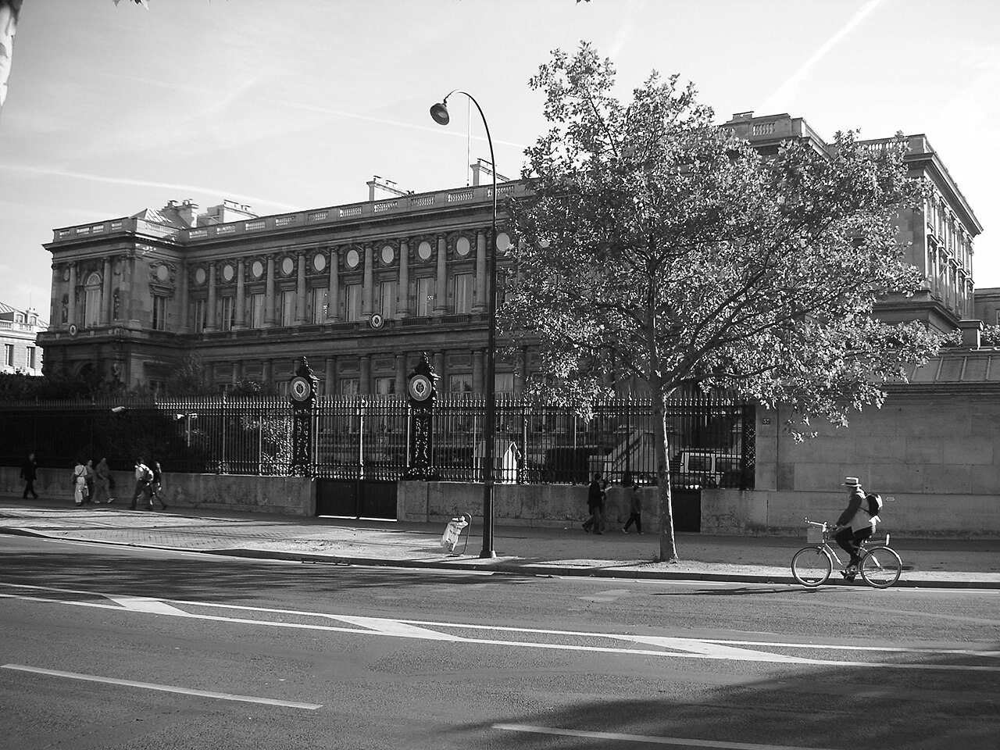

França atribui à Guarda Revolucionária iraniana a sabotagem dos frigoríficos de cerca de 700 supermercados em outubro

Imagem de arquivoDesenvolvimento novo no caso dos ataques informáticos à refrigeração de supermercados, que este jornal acompanhou nas edições de 6 e 8 de novembro: o Ministério francês dos Negócios Estrangeiros acusou formalmente, na segunda-feira, uma unidade ligada à Guarda Revolucionária do Irão de ter sabotado os sistemas de frio de cerca de 700 estabelecimentos em França, na noite de 11 para 12 de outubro. Segundo Paris, a responsável é a Shahid Kaveh, uma unidade de ciberataque associada ao centro eletrónico e cibernético daquela força militar iraniana. A atribuição foi feita pelo centro de coordenação de crises cibernéticas, que reúne a agência nacional ANSSI, o comando militar de ciberdefesa e os serviços de informações.
De acordo com os dados oficiais citados pela BleepingComputer, os atacantes entraram nos controladores industriais de refrigeração e alteraram remotamente os parâmetros de descongelação para temperaturas elevadas, o que provocou a perda de produtos e princípios de incêndio em pelo menos 15 casos. Foram atingidas grandes cadeias como Carrefour, Leclerc, Intermarché, Casino, Coopérative U e Metro, mas também talhos, um matadouro, cooperativas agroalimentares e pequenas centrais hidroelétricas com equipamento Schneider Electric. As autoridades estimam prejuízos de várias dezenas de milhões de euros. Entre os indícios apontados estão a infraestrutura usada, ferramentas características do grupo, a divulgação do ataque por um canal de propaganda ligado à unidade e vestígios em língua persa.
França vai convocar o embaixador do Irão e propor novas sanções da União Europeia contra pessoas e entidades envolvidas, medidas que ainda não foram adotadas. Segundo a Al Jazeera, citada pela Tech Times, o Ministério Público de Paris abriu uma investigação judicial. Teerão não respondeu a um pedido de comentário da Reuters, mas costuma negar envolvimento em operações deste tipo. A acusação abrange apenas a vaga de outubro em França: a segunda vaga, de 2 de novembro, que atingiu mais de 115 lojas em seis países europeus, não foi atribuída a ninguém por fontes oficiais, e a reivindicação feita por grupos pró-russos não foi confirmada de forma independente.
Fontes: BleepingComputer (9 nov.), Economie Matin (9 nov.), Tech Times (10 nov.)
Confirmado por duas fontes independentes. Atribuição, número de lojas, incêndios e medidas anunciadas confirmados na BleepingComputer, na Economie Matin e na Tech Times, que remetem para a declaração do ministério francês e para o relatório CERT-FR CTI-009 (não foi possível abrir este relatório diretamente). A investigação judicial é referida pela Al Jazeera, citada pela Tech Times, e não foi confirmada noutra fonte consultada. Trata-se de uma atribuição governamental, não de uma decisão de tribunal.


.svg){kind=link}


.jpg){kind=link}

.jpg){kind=link}
.jpg){kind=link}


.jpg){kind=link}